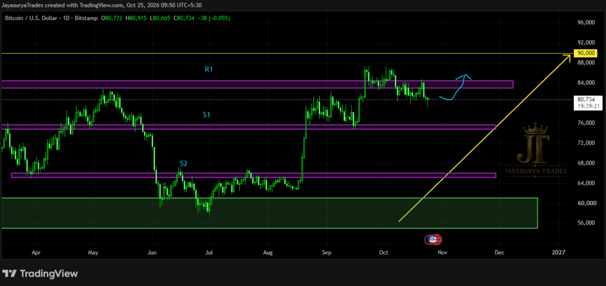
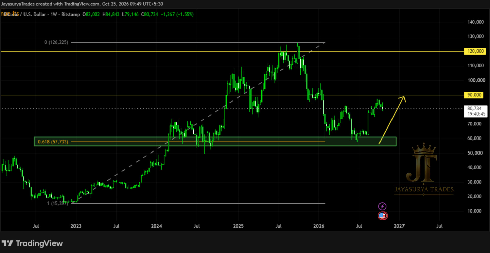

For this Sunday Market Focus, I am reviewing Bitcoin / BTCUSD. On the higher timeframe, the weekly chart shows that price has respected the 61.8% Fibonacci retracement level. The broader trend remains upward, and the chart has not yet given a signal indicating a change to a downtrend.
The next major resistance on the weekly chart is around 90,000. If price breaks above that level, the next resistance reference is around 120,000. Price is currently moving toward the 90,000 area, but the potential bullish continuation still requires confirmation.
Higher-Timeframe Structure: The weekly trend remains upward, and price has respected the 61.8% Fibonacci retracement level.
Major Resistance: Around 90,000 on the weekly chart.
Next Resistance Reference: Around 120,000 if price breaks above 90,000.
Daily Bullish Confirmation: A daily candle close above the marked R1 resistance around 90,000 is the condition being watched before considering bullish setups.
Support Scenario: If price falls toward S1, the broader weekly uptrend remains the reason not to look for bearish entries based on that move alone.
Approach: Confirmation first, decision later.


Higher-Timeframe View — 61.8% Fibonacci Retracement
On the weekly timeframe, Bitcoin has clearly respected the 61.8% Fibonacci retracement level marked on the chart. The overall trend remains upward, and there is no signal in the current analysis indicating that the market has changed into a downtrend.
This structure supports watching for the possibility of further bullish movement. However, respecting the Fibonacci level does not by itself confirm that the next upward move has begun. The market still needs to provide the confirmation being watched.
Key Levels to Monitor
The weekly chart identifies 90,000 as the next major resistance. If price breaks above 90,000, the next resistance reference is around 120,000. On the daily timeframe, R1 is the minor resistance level being watched for bullish confirmation, while S1 and S2 are the marked minor support levels. No numerical prices were provided for S1 or S2.
Potential Scenarios & Confirmation Conditions
If price closes above R1 on the daily timeframe: this would provide the confirmation being watched before considering bullish setups. From the higher-timeframe structural read, such a move could support the potential continuation of the broader upward trend toward the 90,000 resistance area.
If price breaks above 90,000: the next major resistance reference on the weekly chart is around 120,000. This remains a conditional scenario, not a confirmed outcome.
If price falls toward S1: the weekly timeframe still shows an upward trend and respect for the 61.8% Fibonacci retracement. For that reason, the analysis does not favor looking for bearish entries solely because price moves down toward S1. The marked levels and price confirmation remain important.
The focus is on aligning the daily confirmation with the higher-timeframe structure. The weekly chart provides the broader bullish context, while the daily candle close above R1 is the specific confirmation condition being watched before considering bullish setups.
Key Takeaways
- The weekly trend remains upward, with no downtrend-change signal identified in this analysis.
- Bitcoin has respected the 61.8% Fibonacci retracement level on the weekly timeframe.
- Around 90,000 is the next major weekly resistance reference.
- If price breaks above 90,000, the next resistance reference is around 120,000.
- A daily candle close above the marked R1 is the confirmation being watched before considering bullish setups.
- S1 and S2 are the daily chart's marked support levels; their numerical values were not provided in the analysis notes.
The plan for Bitcoin remains straightforward: keep the weekly trend and 61.8% Fibonacci retracement in view, monitor the 90,000 resistance area, and wait for the daily confirmation before making a decision.
Weekly structure: upward trend with the 61.8% Fibonacci retracement respected.
Major resistance: around 90,000.
If 90,000 breaks: around 120,000 becomes the next resistance reference.
Daily confirmation: candle close above R1 before considering bullish setups.
Approach: Confirmation first, decision later.
One day. One market. One focused analysis.
Levels. Structure. Scenarios. Confirmation.
No hype. Just how the market behaves.
Watch. Wait. Confirm.
Legal Disclaimer
All chart comments, structural patterns, volumes, and price action layouts discussed on this platform represent the personal opinions and historical chart observations of the creator at Jayasurya Trades. The content provided here is strictly for general informational and investor educational purposes only. It does not constitute, and must never be interpreted as, investment advice, stock recommendations, or direct buy/sell tips. The creator is NOT a SEBI-registered Research Analyst or Investment Advisor. Trading in securities and derivatives involves substantial market risk. Viewers are strongly urged to conduct their own independent technical research and consult a certified, SEBI-registered professional before deploying capital. Jayasurya Trades assumes no liability or financial responsibility for any personal trading outcomes, losses, or execution decisions made by the audience.